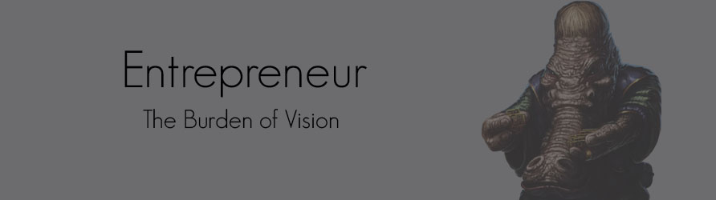
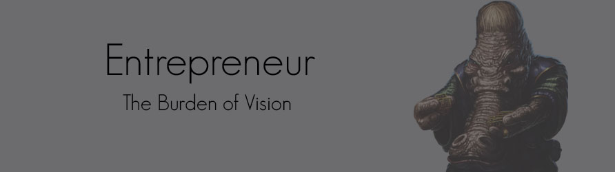
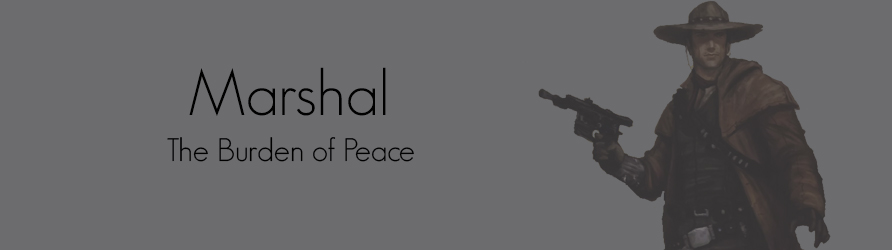
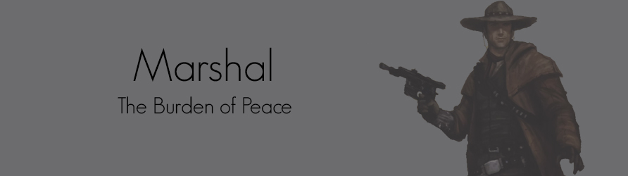

Colonist Specializations
In a way, Colonists are the most out-of-place people in the Outer Rim. They are most often from the Core Worlds, where they were well educated and part of the cultural and professional elite. A Colonist doesn't tend to have the training to survive in areas of high conflict, and he isn't particularly adept at physical exploits.
What he does possess, however, is a keen grasp of the bigger picture, and he usually has both the knowledge to understand probems and the capacity to get them solved. He probably came to the Outer Rim to create opportunities for himself, or to find a better life than what he left behind. If he cannot find that better life, he'll apply all of his knowledge to the task of creating it, and he'll use his considerable social skills to gather like-minded allies to his cause.
Of course, not all Colonists are necessarily altruistic in their pursuits. If knowledge is power, and power corrupts, then it follows that the Colonist is well-suited to take what he knows and exploit it for personal wealth. With charisma and street smarts, a Colonist might gather quite a team of specialists together to both watch his back and see to it that his enemies are brought to heel as he solidifies his power base. Countless Outer Rim worlds have become the personal fiefs of Colonists with bold ideas and willing followers.
Of course, some Colonists fail in their pursuits, and run afoul of the law or their fellows. These Colonists are forced to flee their lives of luxury and survive wherever they can. Some of these individuals may fall in with less reputable, even criminal, individuals. Luckily, these unfortunate Colonists sometimes find their unique skill sets are in high demand.
The clever Colonists—the ones most likely to survive their first few months in the Outer Rim—figure out how to parlay their knowledge and talents into currency and contacts. Providing excellent advice, medical aid, or valuable knowledge can easily endear a Colonist to a warlord or gang leader, giving him the very thing he needs most: security. From a position of relative safety, a wise Colonist will begin gathering connections and data, building up a network that he can one day exploit for his aims, whatever they may be.
Colonists are the consummate leaders, negotiators, inspirational speakers, and strategists. A Colonist can take any small group of capable operators and turn them into a true force to be reckoned with. A capable Colonist in a group can mean the difference between just getting by and doing something truly spectacular in the galaxy.
 

 
